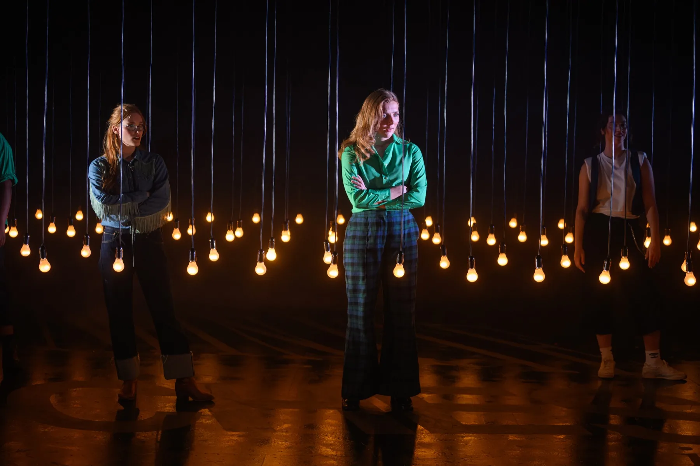

Production Electrician
As You Like It
Photos by David Monteith-Hodge (@photographise)
My role
Production Electrician
I managed the electrical installation behind the lighting in this drama. Due to the amount of dimming channels used in the show, I managed a BS7909 sign-off with the extra distribution and dimming needed for the light bulbs and automation used in the show.
Production Planning
-
During the initial concept meetings of this show, I realised that we did not have enough dimming capacity to support both the main lighting rig and the bulbs. So I started looking into external dimming.
I researched hiring in some ART-2000 racks, but this ended up being too expensive. I instead found existing portable dimmers that were available in the venue.
Given a 400A power supply, I was able to plan out the power distribution and dimming for the show.
-
As these dimmers had not been used in a good couple of years, I had to electrically test each one. I had to write specific PAT test codes for these dimmers.
-
Knowing the dimmer allocations and given the rig plan, I planned out my plug-up within Vectorworks. Below is a render of the power distribution for the show.